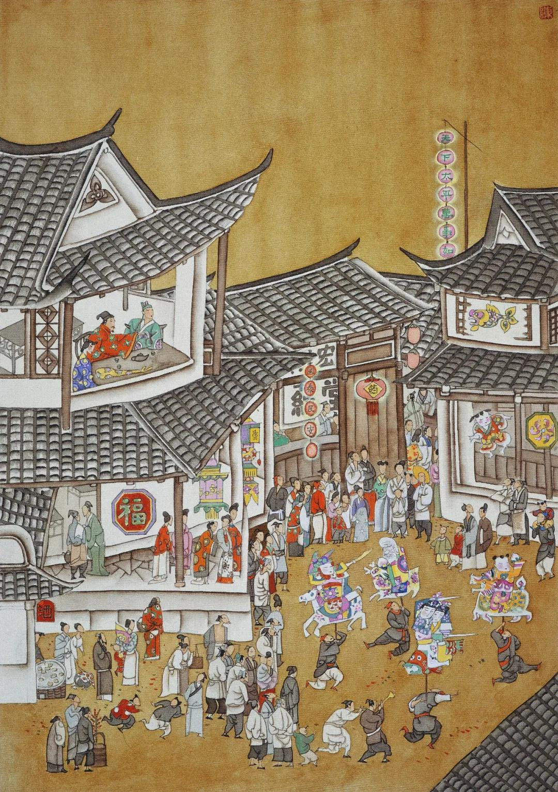

第四十二回 逞豪华门前放烟火 赏元宵楼上醉花灯#
诗曰：
星月当空万烛烧，人间天上两元宵。乐和春奏声偏好，人蹈衣归马亦娇。
易老韶光休浪度，最公白发不相饶。千金博得斯须刻，吩咐谯更仔细敲。
话说西门庆打发乔家去了，走来上房，和月娘、大妗子、李瓶儿商议。月娘道：“他家既先来与咱孩子送节，咱少不得也买礼过去，与他家长姐送节。就权为插定一般，庶不差了礼数。”大妗子道：“咱这里，少不的立上个媒人，往来方便些。”月娘道：“他家是孔嫂儿，咱家安上谁好？”西门庆道：“一客不烦二主，就安上老冯罢。”于是，连忙写了请帖八个，就叫了老冯来，同玳安拿请帖盒儿，十五日请乔老亲家母、乔五太太并尚举人娘子、朱序班娘子、崔亲家母、段大姐、郑三姐来赴席，与李瓶儿做生日，并吃看灯酒。一面吩咐来兴儿，拿银子早定下蒸酥点心并羹果食物。又是两套遍地锦罗缎衣服，一件大红小袍儿、一顶金丝绉纱冠儿、两盏云南羊角珠灯、一盒衣翠、一对小金手镯、四个金宝石戒指儿。十四日早装盒担，叫女婿陈敬济和贲四穿青衣服押送过去。乔大户那边，酒筵管待，重加答贺。回盒中，又回了许多生活鞋脚，俱不必细说。正乱着，应伯爵来讲李智、黄四官银子事，看见，问其所以。西门庆告诉与乔大户结亲之事：“十五日好歹请令正来陪亲家坐坐。”伯爵道：“嫂子呼唤，房下必定来。”西门庆道：“今日请众堂官娘子吃酒，咱每往狮子街房子内看灯去罢。”伯爵应诺去了，不题。
且说那日院中吴银儿先送了四盒礼来，又是两方销金汗巾，一双女鞋，送与李瓶儿上寿，就拜干女儿。月娘收了礼物，打发轿子回去。李桂姐只到次日才来，见吴银儿在这里，便悄悄问月娘：“他多咱来的？”月娘如此这般告他说：“昨日送了礼来，拜认你六娘做干女儿了。”李桂姐听了，一声儿没言语。一日只和吴银儿使性子，两个不说话。
却说前厅王皇亲家二十名小厮，两个师父领着，挑了箱子来，先与西门庆磕头。西门庆吩咐西厢房做戏房，管待酒饭。不一时，周守备娘子、荆都监母亲荆太太与张团练娘子，都先到了。俱是大轿，排军喝道，家人媳妇跟随。月娘与众姊妹，都穿着袍出来迎接，至后厅叙礼。与众亲相见毕，让坐递茶，等着夏提刑娘子到才摆茶。不料等到日中，还不见来。小厮邀了两三遍，约午后才喝了道来，抬着衣匣，家人媳妇跟随，许多仆从拥护。鼓乐接进后厅，与众堂客见毕礼数，依次序坐下。先在卷棚内摆茶，然后大厅上坐。春梅、玉箫、迎春、兰香，都是齐整妆束，席上捧茶斟酒。那日扮的是《西厢记》。

不说画堂深处，珠围翠绕，歌舞吹弹饮酒。单表西门庆打发堂客上了茶，就骑马约下应伯爵、谢希大，往狮子街房里去了。吩咐四架烟火，拿一架那里去。晚夕，堂客跟前放两架。旋叫了个厨子，家下抬了两食盒下饭菜蔬，两坛金华酒去。又叫了两个唱的──董娇儿、韩玉钏儿。原来西门庆已先使玳安雇轿子，请王六儿同往狮子街房里去。玳安见妇人道：“爹说请韩大婶，那里晚夕看放烟火。”妇人笑道：“我羞剌剌，怎么好去的，你韩大叔知道不嗔？”玳安道：“爹对韩大叔说了，教你老人家快收拾哩。因叫了两个唱的，没人陪他。”那妇人听了，还不动身。一回，只见韩道国来家。玳安道：“这不是韩大叔来了。韩大婶这里，不信我说哩。”妇人向他汉子说，“真个叫我去？”韩道国道：“老爹再三说，两个唱的没人陪他，请你过去，晚夕就看放烟火。你还不收拾哩！刚才教我把铺子也收了，就晚夕一搭儿里坐坐。保官儿也往家去了，晚夕该他上宿哩。”妇人道：“不知多咱才散，你到那里坐回就来罢，家里没人，你又不该上宿。”说毕，打扮穿了衣服，玳安跟随，迳到狮子街房里来。来昭妻一丈青早在房里收拾下床炕、帐幔、褥被，安息沉香薰的喷鼻香。房里吊着一对纱灯，笼着一盆炭火。妇人走到里面炕上坐下。一丈青走出来，道了万福，拿茶吃了。西门庆与应伯爵看了回灯，才到房子里。两个在楼上打双陆。楼上除了六扇窗户，挂着帘子，下边就是灯市，十分闹热。打了回双陆，收拾摆饭吃了，二人在帘里观看灯市。但见：
万井人烟锦绣围，香车宝马闹如雷。鳌山耸出青云上，何处游人不看来？
二人看了一回，西门庆忽见人丛里谢希大、祝实念，同一个戴方巾的在灯棚下看灯，指与伯爵瞧。因问：“那戴方巾的，你可认的他？”伯爵道：“此人眼熟，不认的他。”西门庆便叫玳安：“你去下边，悄悄请了谢爹来。休教祝麻子和那人看见。”玳安小厮贼，一直走下楼来，挨到人闹里，待祝实念和那人先过去了，从旁边出来，把谢希大拉了一把。慌的希大回身观看，却是玳安。玳安道：“爹和应二爹在这楼上，请谢爹说话。”希大道：“你去，我知道了。等我陪他两个到粘梅花处，就来见你爹。”玳安便一道烟去了。希大到了粘梅花处，向人闹处，就叉过一边，由着祝实念和那一个人只顾寻。他便走来楼上，见西门庆、应伯爵两个作揖，因说道：“哥来此看灯，早晨就不呼唤兄弟一声？”西门庆道：“我早晨对众人，不好邀你每的。已托应二哥到你家请你去，说你不在家。刚才，祝麻子没看见么？”因问：“那戴方巾的是谁？”希大道：“那戴方巾的，是王昭宣府里王三官儿。今日和祝麻子到我家，要问许不与先生那里借三百两银子。央我和老孙、祝麻子作保。要干前程，入武学肄业。我那里管他这闲帐！刚才陪他灯市里走了走，听见哥呼唤，我只伴他到粘梅花处，交我乘人乱，就叉开了走来见哥。”因问伯爵：“你来多大回了？”伯爵道：“哥使我先到你家，你不在，我就来了，和哥在这里打了这回双陆。”西门庆问道：“你吃了饭不曾？”谢希大道：“早晨从哥那里出来，和他两个搭了这一日，谁吃饭来！”西门庆吩咐玳安：“厨下安排饭来，与你谢爹吃。”不一时，就是春盘小菜、两碗稀烂下饭、一碗［火川］肉粉汤、两碗白米饭。希大独自一个，吃的里外干净，剩下些汁汤儿，还泡了碗吃了。玳安收下家活去。希大在旁看着两个打双陆。
只见两个唱的门首下了轿子，抬轿的提着衣裳包儿，笑进来。伯爵在窗里看见，说道：“两个小淫妇儿，这咱才来。”吩咐玳安：“且别教他往后边去，先叫他楼上来见我。”希大道：“今日叫的是那两个？”玳安道：“是董娇儿、韩玉钏儿。”忙下楼说道：“应二爹叫你说话。”两个那里肯来，一直往后走了。见了一丈青，拜了，引他入房中。看见王六儿头上戴着时样扭心鬏髻儿，身上穿紫潞绸袄儿，玄色披袄儿、白挑线绢裙子，下边露两只金莲，拖的水髩长长的，紫膛色，不十分搽铅粉，学个中人打扮，耳边带着丁香儿。进门只望着他拜了一拜，都在炕边头坐了。小铁棍拿茶来，王六儿陪着吃了。两个唱的，上上下下把眼只看他身上。看一回，两个笑一回，更不知是什么人。落后，玳安进来，两个悄悄问他道：“房里那一位是谁？”玳安没的回答，只说是：“俺爹大姨人家，接来看灯的。”两个听的，从新到房中说道：“俺每头里不知是大姨，没曾见的礼，休怪。”于是插烛磕了两个头。慌的王六儿连忙还下半礼。落后，摆上汤饭来，陪着同吃。两个拿乐器，又唱与王六儿听。
伯爵打了双陆，下楼来小解净手，听见后边唱，点手儿叫玳安，问道：“你告我说，两个唱的在后边唱与谁听？”玳安只是笑，不做声，说道：“你老人家曹州兵备──管事宽。唱不唱，管他怎的？”伯爵道：“好贼小油嘴，你不说，愁我不知道？”玳安笑道：“你老人家知道罢了，又问怎的？”说毕，一直往后走了。伯爵上的楼来，西门庆又与谢希大打了三贴双陆。只见李铭、吴惠两个蓦地上楼来磕头。伯爵道：“好呀！你两个来的正好，怎知道俺每在这里？”李铭跪下说道：“小的和吴惠先到宅里来，宅里说爹在这边摆酒。特来伏侍爹每。”西门庆道：“也罢，你起来伺候。玳安，快往对门请你韩大叔去。”不一时，韩道国到了，作了揖，坐下。一面放桌儿，摆上春盘案酒来，琴童在旁边筛酒。伯爵与希大居上，西门庆主位，韩道国打横，坐下把酒来筛；一面使玳安后边请唱的去。
少顷，韩玉钏儿、董娇儿两个，慢条斯礼上楼来。望上不当不正磕下头去。伯爵骂道：“我道是谁来，原来是这两个小淫妇儿。头里我叫着，怎的不先来见我？这等大胆！到明日，不与你个功德，你也不怕。”董娇儿笑道：“哥儿那里隔墙掠个鬼脸儿，可不把我唬杀！”韩玉钏儿道：“你知道，爱奴儿掇着兽头城往里掠──好个丢丑儿的孩儿！”伯爵道：“哥，你今日忒多余了。有了李铭、吴惠在这里唱罢了，又要这两个小淫妇做什么？还不趁早打发他去。大节夜，还赶几个钱儿，等住回晚了，越发没人要了。”韩玉钏儿道：“哥儿，你怎么没羞？大爹叫了俺每来答应，又不伏侍你，你怎的闲出气？”伯爵道：“傻小歪剌骨儿，你见在这里，不伏侍我，你说伏侍谁？”韩玉钏道：“唐胖子掉在醋缸里──把你撅酸了。”伯爵道：“贼小淫妇儿，是撅酸了我。等住回散了家去时，我和你答话。我左右有两个法儿，你原出得我手！”董娇儿问道：“哥儿，那两个法儿？说来我听。”伯爵道：“我头一个，是对巡捕说了，拿你犯夜，教他拿了去，拶你一顿好拶子。十分不巧，只消三分银子烧酒，把抬轿的灌醉了，随你这小淫妇儿去，天晚到家没钱，不怕鸨子不打。”韩玉钏道：“十分晚了，俺每不去，在爹这房子里睡。再不，叫爹差人送俺每，王妈妈支钱一百文，不在于你。好淡嘴女又十撇儿。”伯爵道：“我是奴才，如今年程反了，拿三道三。”说笑回，两个唱的在旁弹唱春景之词。
众人才拿起汤饭来吃，只见玳安儿走来，报道：“祝爹来了。”众人都不言语。不一时，祝实念上的楼来，看见伯爵和谢希大在上面，说道：“你两个好吃，可成个人。”因说：“谢子纯，哥这里请你，也对我说一声儿，三不知就走的来了，叫我只顾在粘梅花处寻你。”希大道：“我也是误行，才撞见哥在楼上和应二哥打双陆。走上来作揖，被哥留住了。”西门庆因令玳安儿：“拿椅儿来，我和祝兄弟在下边坐罢。”于是安放钟箸，在下席坐了。厨下拿了汤饭上来，一齐同吃。西门庆只吃了一个包儿，呷了一口汤，因见李铭在旁，都递与李铭下去吃了。那应伯爵、谢希大、祝实念、韩道国，每人吃一大深碗八宝攒汤，三个大包子，还零四个桃花烧卖，只留了一个包儿压碟儿。左右收下汤碗去，斟上酒来饮酒。希大因问祝实念道：“你陪他到那里才拆开了？怎知道我在这里？”祝实念如此这般告说：“我因寻了你一回寻不着，就同王三官到老孙家会了，往许不与先生那里，借三百两银子去，吃孙寡嘴老油嘴把借契写差了。”希大道：“你每休写上我，我不管。左右是你与老孙作保，讨保头钱使。”因问：“怎的写差了？”祝实念道：“我那等吩咐他，文书写滑着些，立与他三限才还。他不依我，教我从新把文书又改了。”希大道：“你立的是那三限？”祝实念道：“头一限，风吹辘轴打孤雁；第二限，水底鱼儿跳上岸；第三限，水里石头泡得烂。这三限交还他。”谢希大道：“你这等写着，还说不滑哩。”祝实念道：“你到说的好，倘或一朝天旱水浅，朝廷挑河，把石头吃做工的两三镢头砍得稀烂，怎了？那时少不的还他银子。”众人说笑了一回。
看看天晚，西门庆吩咐楼上点灯，又楼檐前一边一盏羊角玲灯，甚是奇巧。家中，月娘又使棋童儿和排军，抬送了四个攒盒，都是美口糖食、细巧果品。西门庆叫棋童儿问道：“家中众奶奶们散了不曾？谁使你送来？”棋童道：“大娘使小的送来，与爹这边下酒。众奶奶们还未散哩。戏文扮了四折，大娘留在大门首吃酒，看放烟火哩。”西门庆问：“有人看没有？”棋童道：“挤围着满街人看。“西门庆道：“我吩咐留下四名青衣排军，拿杆栏拦人伺候，休放闲杂人挨挤。”棋童道：“小的与平安儿两个，同排军都看放了烟火，并没闲杂人搅扰。”西门庆听了，吩咐把桌上饮馔都搬下去，将攒盒摆上，厨下又拿上一道果馅元宵来。两个唱的在席前递酒。西门庆吩咐棋童回家看去。一面重筛美酒，再设珍羞，叫李铭、吴惠席前弹唱了一套灯词。唱毕，吃了元宵，韩道国先往家去了。少顷，西门庆吩咐来昭将楼下开下两间，吊挂上帘子，把烟火架抬出去。西门庆与众人在楼上看，教王六儿陪两个粉头和一丈青在楼下观看。玳安和来昭将烟火安放在街心里。须臾，点着。那两边围看的，挨肩擦膀，不知其数。都说西门大官府在此放烟火，谁人不来观看？果然扎得停当好烟火。但见：
一丈五高花桩，四周下山棚热闹。最高处一只仙鹤，口里衔着一封丹书，乃是一枝起火，一道寒光，直钻透斗牛边。然后，正当中一个西瓜炮迸开，四下里人物皆着，觱剥剥万个轰雷皆燎彻。彩莲舫，赛月明，一个赶一个，犹如金灯冲散碧天星；紫葡萄，万架千株，好似骊珠倒挂水晶帘。霸玉鞭，到处响亮；地老鼠，串绕人衣。琼盏玉台，端的旋转得好看；银蛾金弹，施逞巧妙难移。八仙捧寿，名显中通；七圣降妖，通身是火。黄烟儿，绿烟儿，氤氲笼罩万堆霞；紧吐莲，慢吐莲，灿烂争开十段锦。一丈菊与烟兰相对，火梨花共落地桃争春。楼台殿阁，顷刻不见巍峨之势；村坊社鼓，仿佛难闻欢闹之声。货郎担儿，上下光焰齐明；鲍老车儿，首尾迸得粉碎。五鬼闹判，焦头烂额见狰狞；十面埋伏，马到人驰无胜负。总然费却万般心，只落得火灭烟消成煨烬。
应伯爵见西门庆有酒了，刚看罢烟火下楼来，因见王六儿在这里，推小净手，拉着谢希大、祝实念，也不辞西门庆就走了。玳安便道：“二爹那里去？”伯爵向他耳边说道：“傻孩子，我头里说的那本帐，我若不起身，别人也只顾坐着，显的就不趣了。等你爹问，你只说俺每都跑了。”落后，西门庆见烟火放了，问伯爵等那里去了，玳安道：“应二爹和谢爹都一路去了。小的拦不回来，多上覆爹。”西门庆就不再问了。因叫过李铭、吴惠来，每人赏了一大巨杯酒与他吃。吩咐：“我且不与你唱钱，你两个到十六日早来答应。还是应二爹三个并众伙计当家儿，晚夕在门首吃酒。”李铭跪下道：“小的告禀爹：十六日和吴惠、左顺、郑奉三个，都往东平府，新升的胡爷那里到任，官身去，只到后晌才得来。”西门庆道：“左右俺每晚夕才吃酒哩。你只休误了就是了。”二人道：“小的并不敢误。”两个唱的也就来拜辞出门。西门庆吩咐：“明日，家中堂客摆酒，李桂姐、吴银姐都在这里，你两个好歹来走一走。”二人应诺了，一同出门，不在话下。西门庆吩咐来昭、玳安、琴童收家活。灭息了灯烛，就往后边房里去了。
且说来昭儿子小铁棍儿，正在外边看放了烟火，见西门庆进去了，就来楼上。见他爹老子收了一盘子杂合的肉菜、一瓯子酒和些元宵，拿到屋里，就问他娘一丈青讨，被他娘打了两下。不防他走在后边院子里顽耍，只听正面房子里笑声，只说唱的还没去哩，见房门关着，就在门缝里张看，见房里掌着灯烛。原来西门庆和王六儿两个，在床沿子上行房。西门庆已有酒的人，把老婆倒按在床沿上，褪去小衣，那话上使着托子干后庭花。一进一退往来［扌扉］打，何止数百回，［扌扉］打的连声响亮，其喘息之声，往来之势，犹赛折床一般，无处不听见。这小孩子正在那里张看，不防他娘一丈青走来看见，揪着头角儿拖到前边，凿了两个栗爆，骂道：“贼祸根子，小奴才儿，你还少第二遭死？又往那里张他去！”于是，与了他几个元宵吃了，不放他出来，就唬住他上炕睡了。西门庆和老婆足干捣有两顿饭时才了事。玳安打发抬轿的酒饭吃了，跟送他到家，然后才来同琴童两个打着灯儿跟西门庆家去。正是：
不愁明月尽，自有夜珠来。